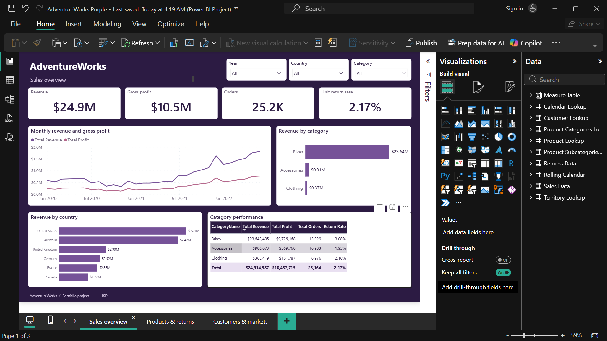

مشروع دورة تم تطويره وتخصيصه01 — AdventureWorks
تحليل مبيعات الدراجات ومستلزمات ركوبها
تقرير لشركة افتراضية، موجّه إلى مدير المبيعات لمتابعة الإيرادات والأرباح والمرتجعات، ومقارنة المنتجات والأسواق.

01
إعداد البيانات
تنظيف وتحويل البيانات عبر Power Query، وتجهيز جداول المبيعات والمرتجعات والمنتجات والعملاء والتواريخ للتحليل.
02
النموذج والمقاييس
ربط الجداول واستخدام DAX لحساب الإيرادات والأرباح وعدد الطلبات والعملاء ونسبة الوحدات المرتجعة.
03
عرض الأداء
ثلاث صفحات تغطي الملخص التجاري، المنتجات والمرتجعات، والعملاء والأسواق، مع فلاتر السنة والدولة والفئة.
ملاحظة من التحليل
حققت فئة الدراجات نحو $23.64M من إجمالي $24.91M، ما يوضح تركّز الإيرادات في هذه الفئة. هذه نتيجة وصفية لبيانات تدريبية، وليست قياسًا لأداء شركة حقيقية.